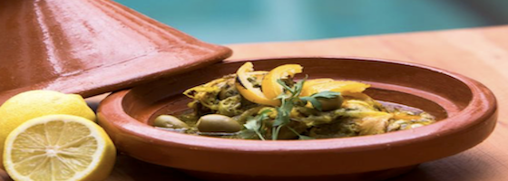
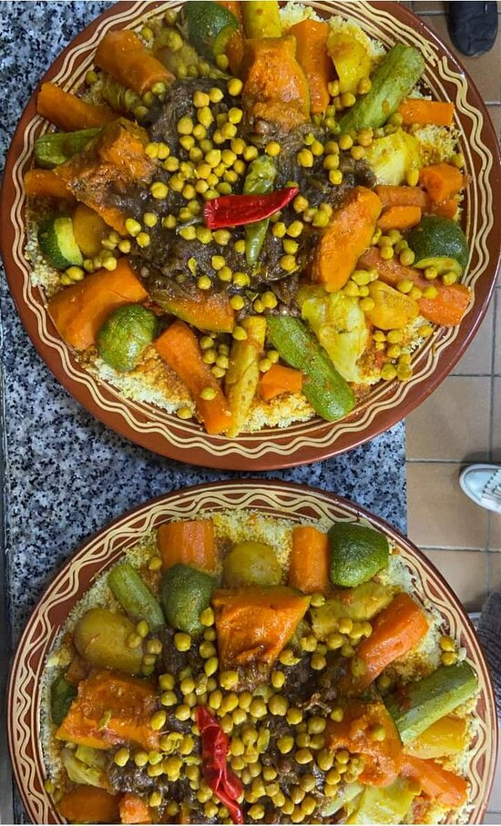
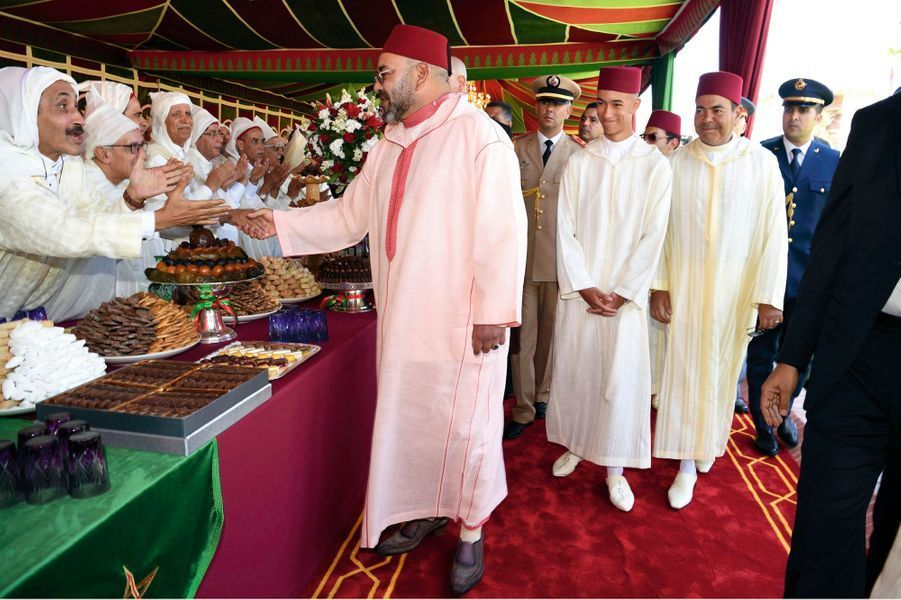
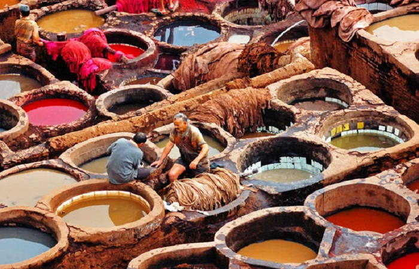
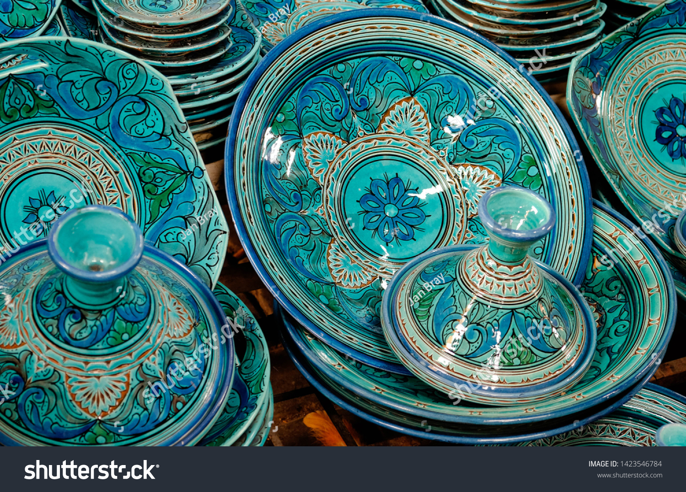

The story of Moroccan Caftan

Although the origins of the Caftans are said to be outside of Morocco and it wasn’t originally worn only by women, the Moroccan Caftan seems to be its own thing.
Read more
Although the origins of the Caftans are said to be outside of Morocco and it wasn’t originally worn only by women, the Moroccan Caftan seems to be its own thing.
Read moreYou should note that this kind of decoration has spiritual roots. Religious concepts and sacred Islamic texts had the most important influence on this art.
Read moreStep into the world of Moroccan culture with this blog crafted by Kenza, a proud Moroccan keen on sharing her country's vibrant heritage. Through articles dedicated to Moroccan cuisine, fashion, and artisanal art, Kenza offers an immersive journey into the richness and diversity of Moroccan traditions. From the tantalizing flavors of tagines to the intricate beauty of traditional garments and the skilled craftsmanship of local artisans, each piece reflects the essence of Morocco's cultural tapestry, inviting readers to explore and appreciate its timeless charm.
Gastronomy enthusiasts, top chefs, and foodies worldwide have long been aware that Moroccan cuisine leads in exciting and exotic flavors when up against the seven continents.
 Read more
Edit
Read more
Edit
Moroccan tajines often combine lamb or chicken with a medley of ingredients or seasonings: olives, quinces, apples, pears, apricots, raisins, prunes, dates
 Read more EditAt one point in time, couscous was also the national dish for southern Spain; however, when the Arabs were expelled it became illegal to eat couscous by the decree of the inquisition.
 Read more EditAlthough the origins of the Caftans are said to be outside of Morocco and it wasn’t originally worn only by women, the Moroccan Caftan seems to be its own thing.
Read more
Edit
Many cultures have a go-to outfit or piece of clothing – something that’s comfortable, versatile, a stylish. In Morocco, it’s the djellaba, a long garment with sleeves and a hood that comes in dozens of different styles and can be worn by men and women.
 Read more EditWe explain all about this handmade product typical of Moroccan culture and shaped by hand, from generation to generation, by craftsmen babouchiers
 Read more
Edit
Read more
Edit
You should note that this kind of decoration has spiritual roots. Religious concepts and sacred Islamic texts had the most important influence on this art.
Read more EditMorocco is a global reference in leather goods. In fact, it is the country that gave its name to the leather industry. Let's take a guided tour of the tanneries of Marrakech to learn more about this ancient technique.
 Read more EditThe Art of Pottery is one of Morocco’s renowned know-how. Morocco’s pottery and ceramics are one of the real treasures of the Kingdom with diverse traditional and modern colors and designs influenced by Amazigh and Islamic art and before them, absorbing Phoenician, Roman, and Byzantine designs.
 Read more Edit